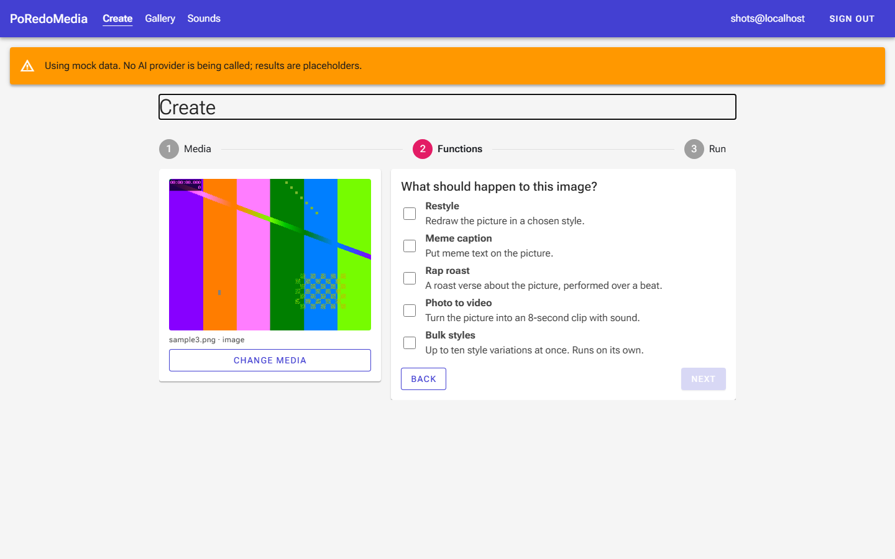
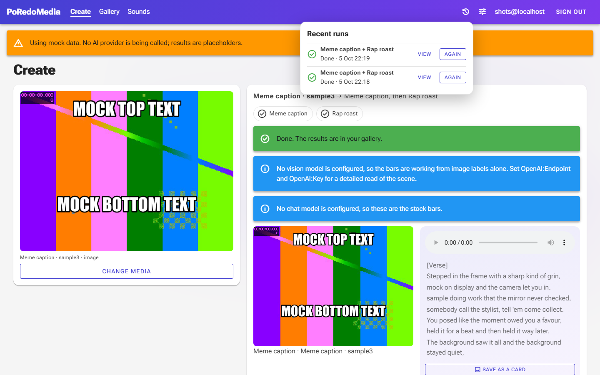
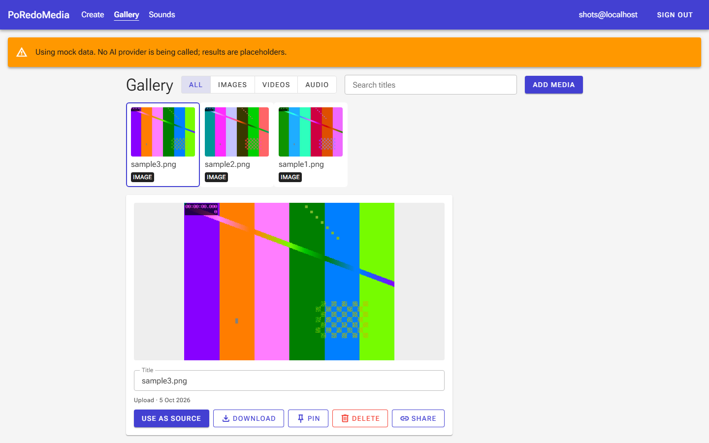
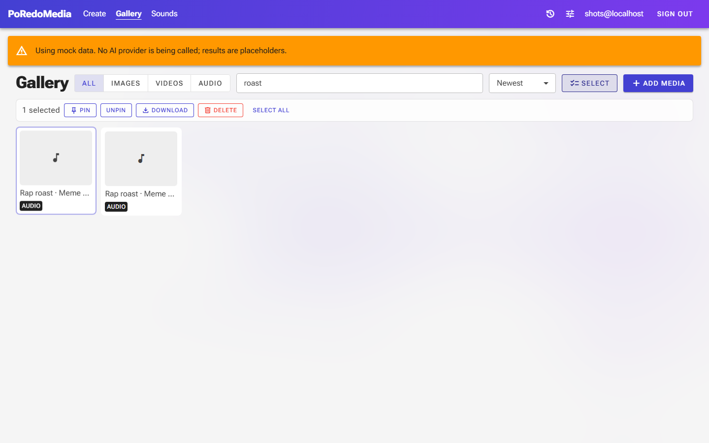
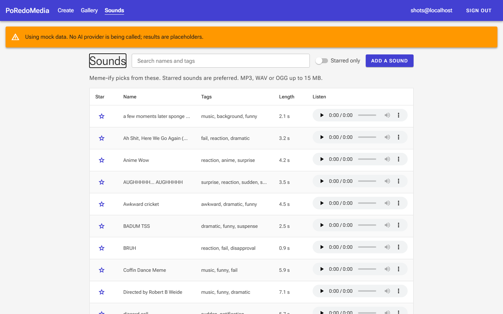
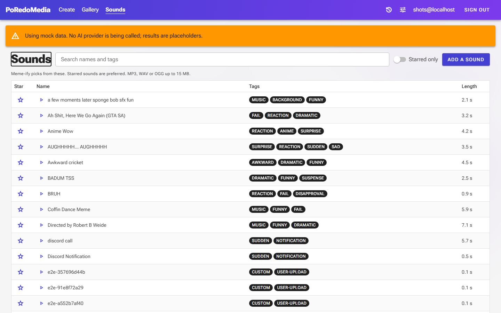
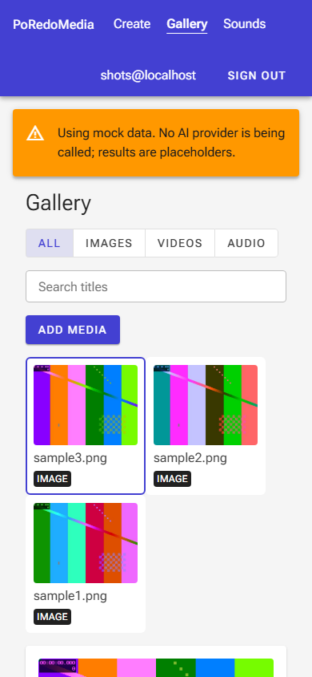
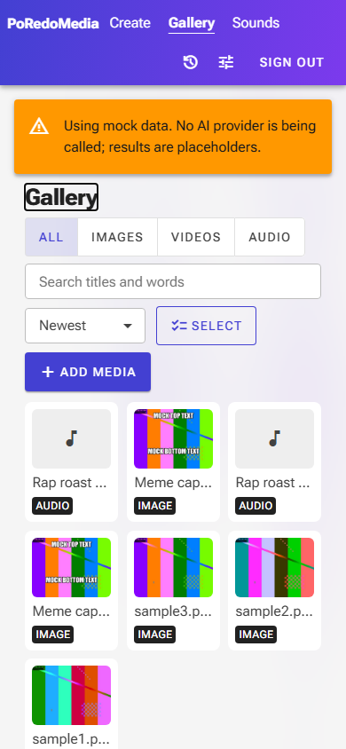
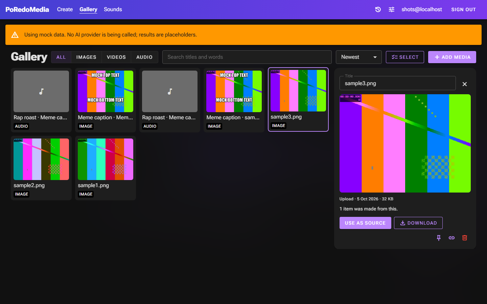
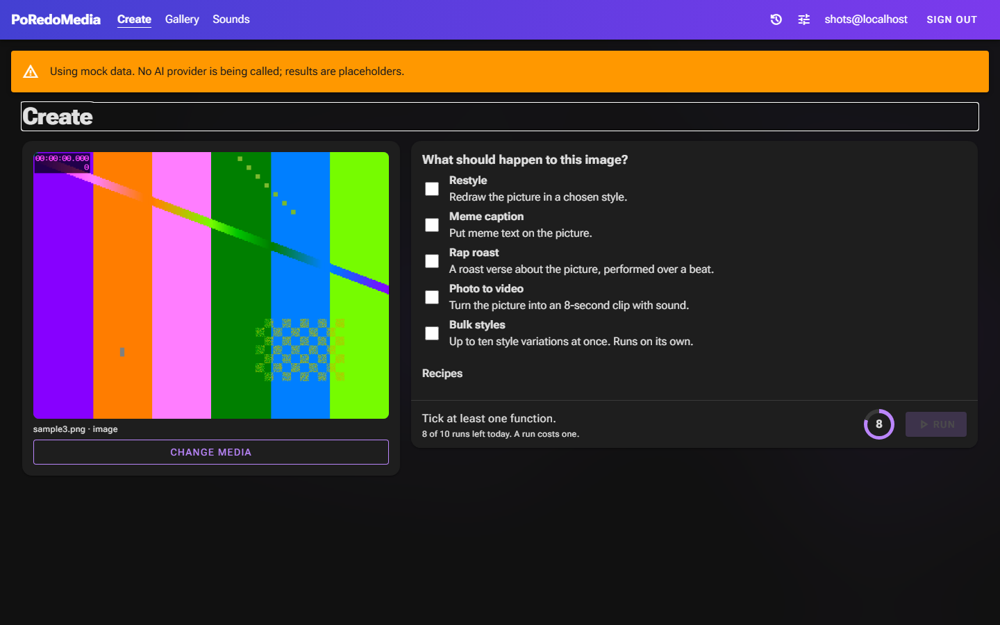

5 October 2026. Left is before, right is after. Yellow numbers mark what is new; red marks what was removed.
Both sets were captured from the app running in mock mode at 1440×900, and 390×844 for the phone shots.
Create: three steps became one pane
Before

ABC
After
123456
A The Media / Functions / Run stepper is gone.
B Back and Next are gone: there is nothing to step through.
C The page no longer sits in a 960 px column with empty margins.
1 A run bar that stays in view: what will run, the estimated cost, and Run.
2 A dial of runs left today.
3 Recipes: save what is ticked under a name and reuse it. Last-used options are remembered.
4 Run tray: recent runs, with View and Again. Runs keep going when you leave the page.
5 Settings: dark theme, interface sounds, volume.
6 A larger preview that stays put while the options scroll.
Create: a finished run
After: results
1234
After: the run tray

5
1 Each function is a step chip: waiting, working, done or failed.
2 The roast stage: the line being performed lights up and the stage pulses with the track. "Save as a card" makes a PNG.
3 A toast (and a sound) when any run ends, on whichever page you are.
4 The session cost counts up to its new value.
5 Recent runs. View returns to a run; Again starts it once more with the same options.
Gallery
Before

After
123456
1 Search covers titles, where an item came from, and its words. Press / to jump to it.
2 Sort: newest, oldest, name, largest.
3 Select mode: pin, unpin, download or delete several items at once.
4 Add media opens the same drop / paste / camera picker Create uses.
5 The details panel stays beside a full-width grid. Filter, sort and the open item are in the address, so back and refresh keep them.
6 One clear primary action; pin, share and delete are icon buttons. Arrow keys move, P pins, Del deletes, Enter uses as source.
After: what an item was made from
After: select mode

Sounds
Before

A
After

12
A The player in every row is gone, and with it a 300 px column.
1 A play button per row drives one shared player; starting a sound stops the last.
2 Tags are chips. Rows are denser: 20 to a page instead of 15.
Phone
Before

After

1
1 Details open as a sheet from the bottom, over the grid, instead of far below it.
Controls are at least 44 px tall, the header keeps to what is tapped, and the installed app respects the notch and home bar.
Dark theme
After: Gallery

After: Create

New. It follows the system setting on first visit and can be switched in Settings. The faint moving
colour behind the page is a WebGL shader; it brightens while a file is dragged in or a run is working, and stays still
when the system asks for reduced motion.
 1
2
3
4
5
6
1
2
3
4
5
6
 1
2
3
4
1
2
3
4
 1
2
3
4
5
6
1
2
3
4
5
6